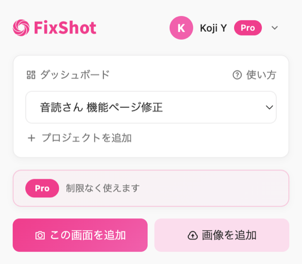
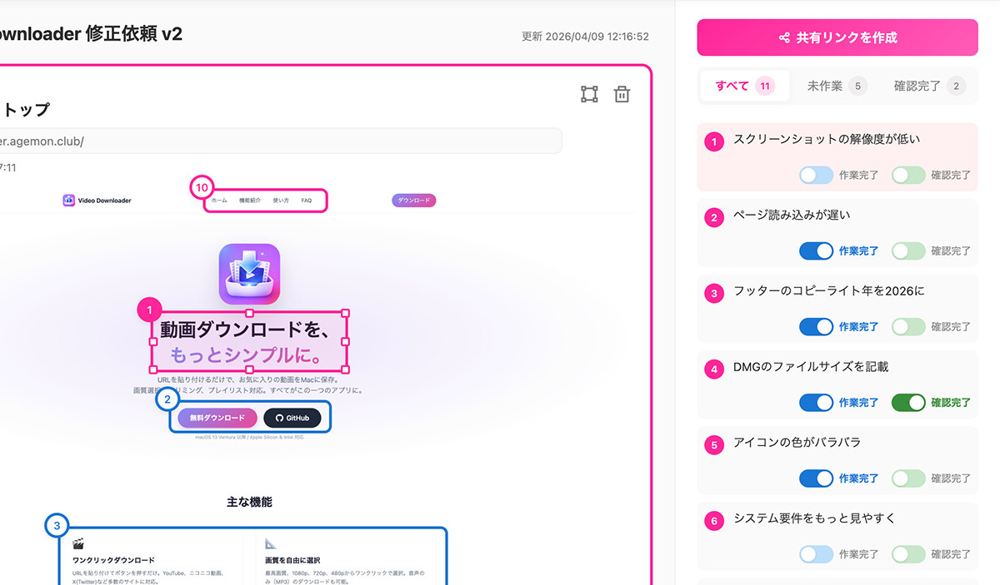
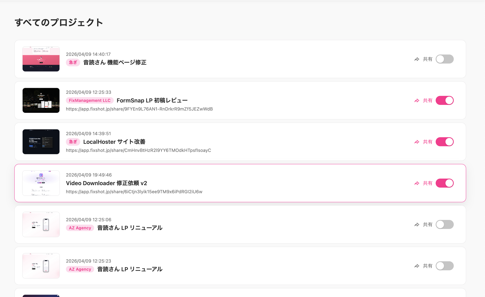
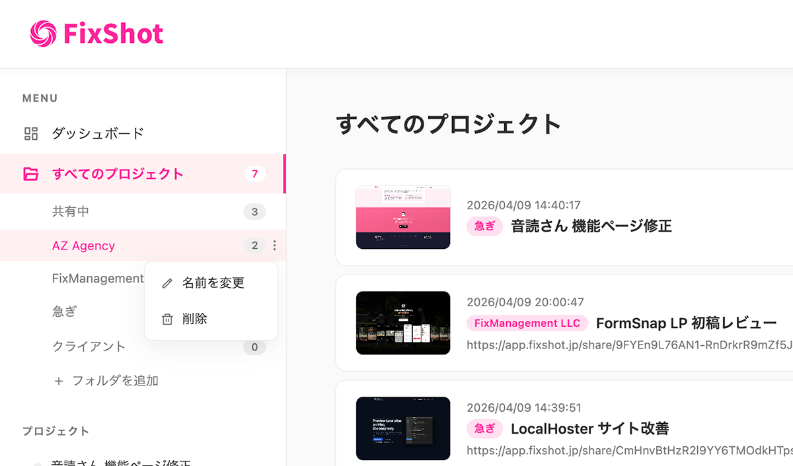
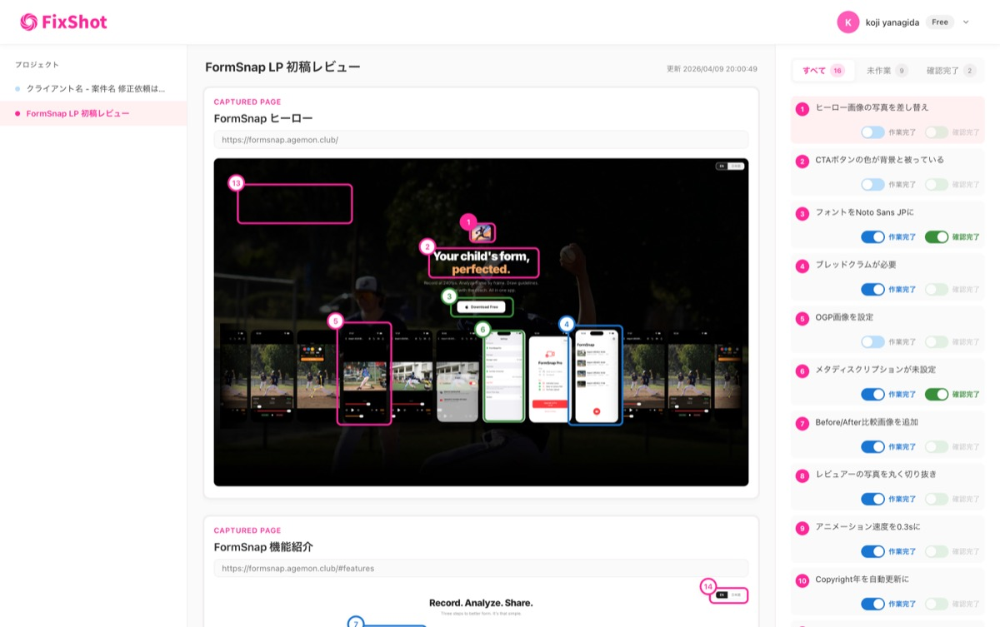

FixShotでできること
修正依頼に必要なすべてが、ひとつのツールに。
Chrome拡張のボタンひとつで、表示中のページをそのままキャプチャ。スクショを撮って貼り付ける手間がなくなります。PNGやJPEGの画像ファイルを直接アップロードすることも可能です。
修正したい箇所をドラッグで矩形選択し、コメントを追加。「どこを」「どう直すか」が視覚的に伝わるので、テキストだけの指示で起きる認識のズレを防ぎます。
レビューリストから共有リンクを発行して、相手に送るだけ。受け取った相手はログイン不要、ブラウザだけで修正内容を確認できます。共有の停止もいつでも可能です。
クライアントやプロジェクトごとにフォルダを作成して、レビューリストを整理。複数案件を並行して進めるディレクターやマーケターにも対応します。
各注釈に「作業完了」「確認完了」のチェックを付けられます。未対応の修正がひと目でわかるので、対応漏れを防ぎ、レビューの完了を明確にできます。
Googleアカウントでログインすれば、レビューデータがクラウドに同期。別のPCや端末からでも同じレビューリストにアクセスできます。ローカルデータは自動的にクラウドへ移行されます。
Chrome拡張のボタンひとつで、表示中のページを丸ごとスクリーンショット。
面倒なスクショ撮影→貼り付けの手間がゼロになります。

修正したい箇所を矩形で囲んでコメントを追加。
スクリーンショットの上に直接書き込むので、テキストだけでは伝わらない修正意図を正確に伝えられます。

作成したレビューリストは共有リンクで即座に送信。
受け取った相手はログインもインストールも不要で、ブラウザから修正内容を確認できます。

クライアントやプロジェクト単位でフォルダを作成し、レビューリストを分類。複数案件を並行で進めても、必要なリストにすぐたどり着けます。

各注釈に「作業完了」「確認完了」のステータスを設定。リスト全体の進捗がひと目で把握でき、レビューの完了タイミングを明確にできます。
